홀드릴링 잔류응력 측정 시스템
MTS3000 - ASTM E837
400,000rpm 고속 드릴링과 자동 제어로 ASTM E837 절차를 수행하는 홀드릴링 잔류응력 측정 시스템 MTS3000의 구성, 플라스틱 전용 버전, 배관 내부 측정용 1-SINT/SLIDE5를 소개합니다.
응력 유발 최소화
자동 시스템
Kockelmann 해석
MTS3000-RESTAN 시스템 개요
MTS3000-RESTAN은 이탈리아 SINT Technology가 개발한 홀드릴링 잔류응력 측정 시스템입니다. 스트레인게이지 로제트 중앙에 작은 구멍(약 Ø1.8mm × 깊이 2mm)을 가공하면, 그 주변에 갇혀 있던 잔류응력이 해방되면서 변형률이 변하고, 이 변화량을 해석해 잔류응력의 크기와 방향을 구합니다. 시험 중 드릴링 이송과 변형률 기록이 자동으로 제어되어 반복성과 가공 정확도가 높고 측정 시간이 짧은 것이 특징입니다.


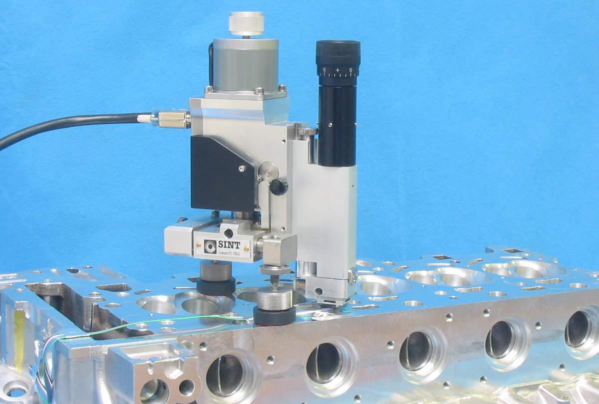
시스템 구성
시스템은 기계식 드릴링 장치, 전자 제어 유닛, 디지털 스트레인게이지 앰프(HBM QuantumX), 제어·해석 소프트웨어, 노트북으로 이루어지고, 에어 그룹(압축공기 필터·조절)을 연결해 사용합니다.
| 구성 | 역할 |
|---|---|
| 기계부(Mechanical device) | 광학 현미경과 드릴링 헤드, 고속 터빈을 포함한 측정 본체 |
| 전자 제어 유닛 | 드릴링 이송, 회전, 압력 상태를 제어 |
| 디지털 스트레인게이지 앰프(HBM QuantumX) | 로제트 3개 그리드의 변형률 수집 (HBM QuantumX 적용) |
| 제어·해석 소프트웨어 | 측정 조건 설정, 자동 드릴링 제어, 변형률-깊이 기록, 잔류응력 계산 |
| 에어 그룹 | 터빈 구동용 압축공기 공급 (3~4bar의 일정한 압력 필요) |


기계부 주요 기능
측정 정확도를 좌우하는 기계부는 센터링, 이송, 고정, 위치 조정 기능을 갖추고 있습니다.
| 기능 | 내용 |
|---|---|
| 현미경 센터링 | 현미경을 터빈 드릴링 타깃과 정렬해 로제트 중심에 정확히 센터링 |
| 수직 이송 | 자동·수동 수직 이동, 자동 이송 불확도 ±0.005mm, 최소 5μm 단위 가공 단계 |
| 마그네틱 풋 | 각도 조절이 가능한 넓은 마그네틱 풋 3개로 다양한 자세에서 시편에 고정 |
| XY 위치 조정 | 마이크로미터 스크류로 위치를 조정하고 다이얼 게이지 2개로 구멍 편심 확인 |
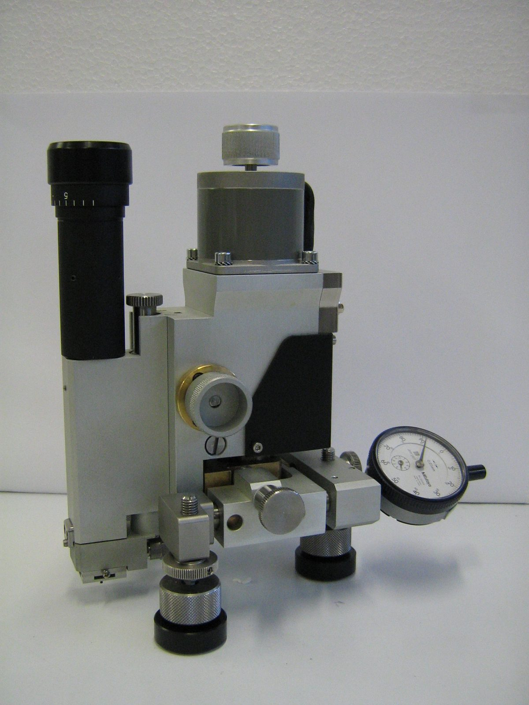
고속 드릴링 기술과 커터 선택
MTS3000은 400,000rpm 고속 에어터빈과 초경(텅스텐 카바이드) 역원추 밀링커터를 사용합니다. 이 방식은 1982년 Flaman이 도입·연구한 기법으로, 구멍을 가공하는 과정에서 새로운 응력을 유발하지 않도록 하기 위한 것입니다. 터빈은 높은 회전수와 낮은 토크로 가공하므로 3~4bar의 일정한 공기압이 필요합니다.
| 시편 경도에 따른 커터 | 특징 |
|---|---|
| 초경 (Tungsten Carbide) | 일반적인 강재 시편용 기본 커터 |
| 초경 + 코팅 (TiAlN) | 더 단단한 시편용 코팅 커터 |
| 다이아몬드 드릴 | 경도가 매우 높은 소재용 |
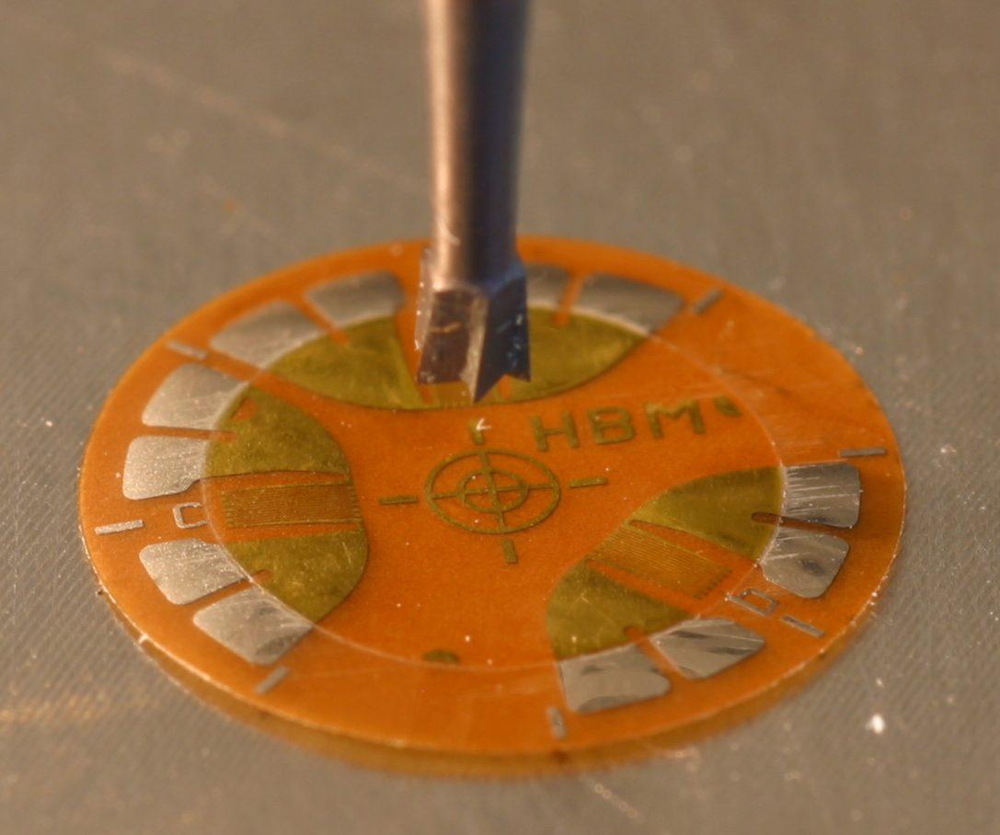
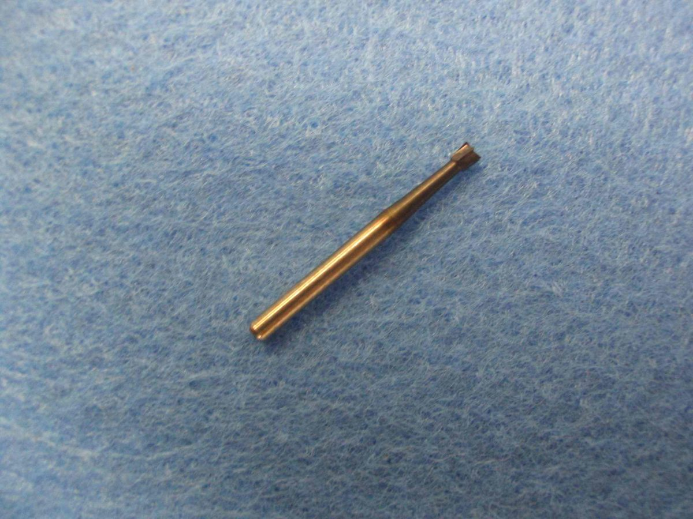
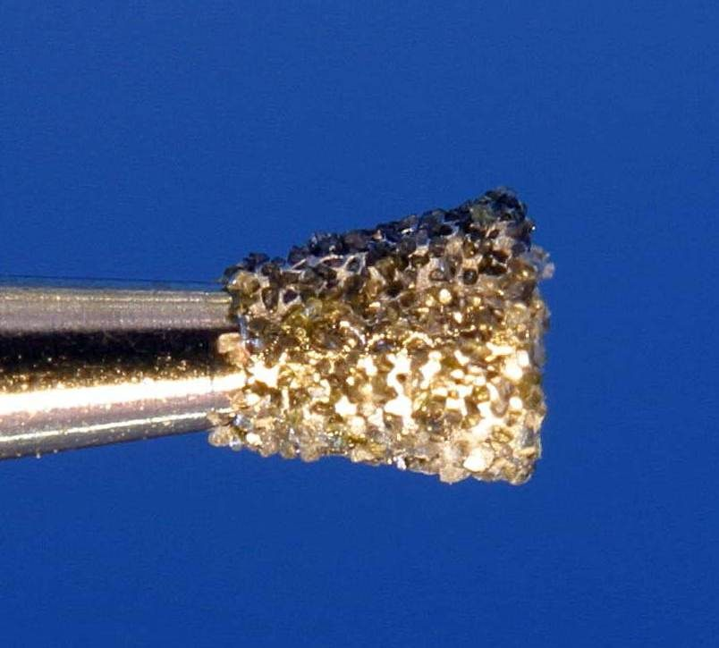
ASTM E837 측정 절차
홀드릴링 스트레인게이지법은 세계적으로 표준화된 유일한 잔류응력 계산 방법(ASTM E837)으로, 드릴링 단계 수, 수치 계수, 데이터 처리, 측정 불확도를 규정합니다. 기본 절차는 아래와 같습니다.
시편 두께와 구멍 방식
| 구멍 방식 | 시편 두께 (표준 게이지 직경 기준) | 측정 방식 |
|---|---|---|
| 관통 구멍(Through) | 약 2.0mm 미만 (0.4·D 이하) | 시편 전체 두께를 가공하고 완료 후 3개 변형률 취득, 응력은 깊이 방향 균일 가정 |
| 중간 구멍(Intermediate) | 약 2.0 ~ 6.1mm (0.4·D ~ 1.2·D) | 깊이 2mm 가공, 근사 결과 |
| 블라인드 구멍(Blind) | 약 6.1mm 초과 (1.2·D 초과) | 균일성 검토 후 균일하면 8단계(0.25mm) 가공, 비균일하면 깊이 1mm 구간을 40단계(0.05mm)로 가공해 깊이별 분포 해석 |
※ 균일성은 측정 변형률이 기준 곡선에서 ±3% 이내일 때 균일한 것으로 판단합니다. 해석 방법은 ASTM E837-01·E837-08(깊이 방향 균일 응력), Integral 방법·Kockelmann 방법(깊이 방향 비균일 응력)에서 선택합니다. 표기는 ASTM E837입니다.
제어·해석 소프트웨어
제어 소프트웨어는 앰프 설정, 드릴링 파라미터(단계 수, 깊이 간격), 로제트 설정, 구멍 가공 자동 제어, 깊이에 따른 변형률 측정을 처리합니다. 해석 소프트웨어는 측정 변형률을 수치 보간으로 역산해 최적 곡선을 구하고, 네 가지 계산 방법으로 깊이별 잔류응력을 산출하며 결과를 내보내고 출력할 수 있습니다.
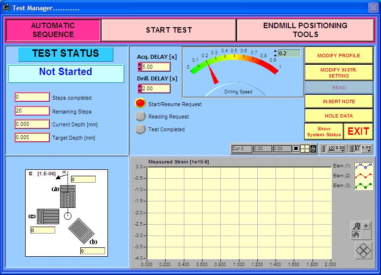
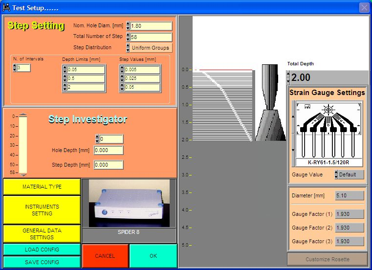
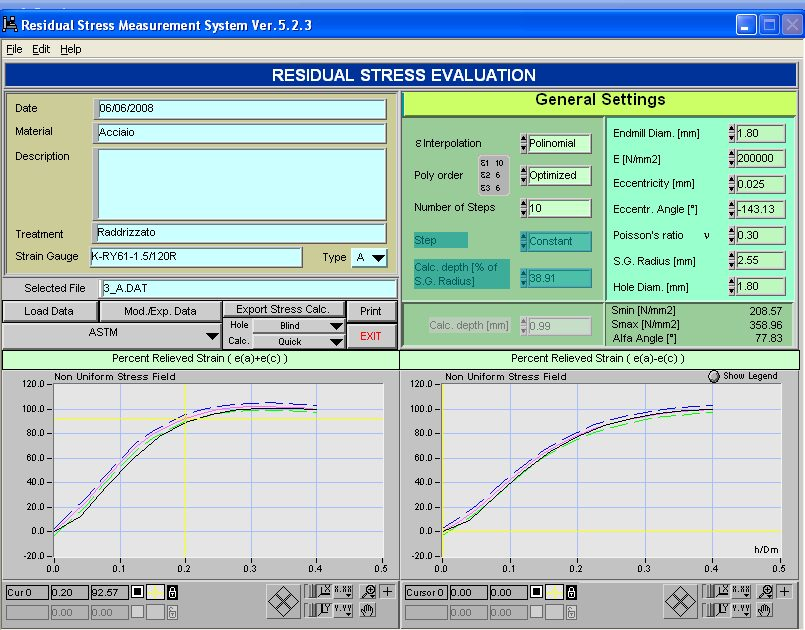
적용 소재와 구성 선택
MTS3000은 일반 금속(강, 알루미늄, 주철), 특수 금속(티타늄, 고장력강), 플라스틱(ABS, 폴리카보네이트 등), 복합재료까지 측정할 수 있습니다. 소재에 따라 구동 방식과 가공 조건을 선택합니다.
| 선택 항목 | 옵션 |
|---|---|
| 구동 방식 | 에어 터빈 / 전기 모터 |
| 가공·기록 조건 | 이송 속도, 회전 속도, 지연 시간 |
| 커터 종류 | 초경 / 초경 TiAlN 코팅 / 다이아몬드 |
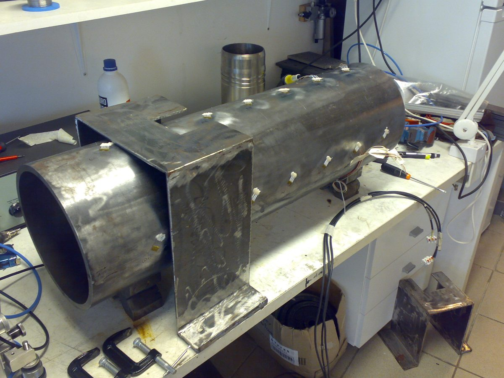
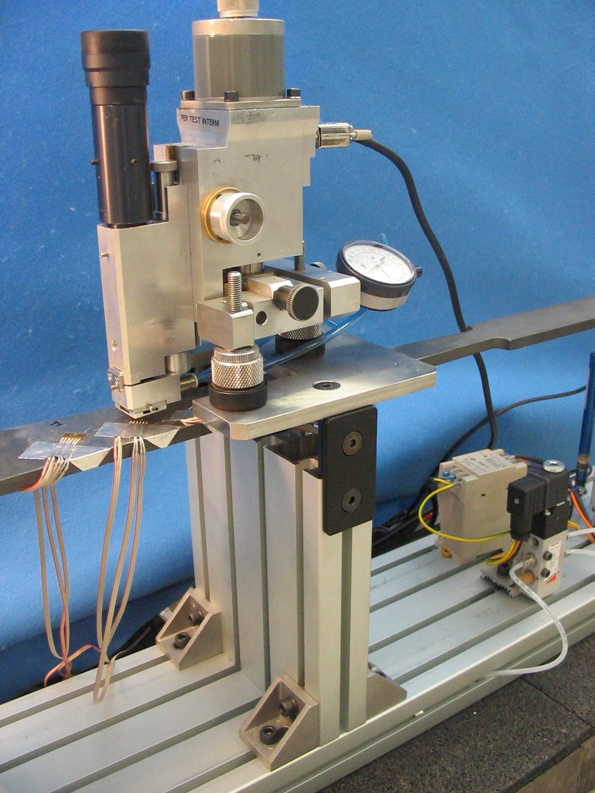
플라스틱 전용 버전
플라스틱은 가공 열의 영향을 받기 쉬워 일반 금속용 고속 가공을 그대로 쓸 수 없습니다. MTS3000에는 이를 위한 플라스틱 전용 구성이 있으며, 제조사 자료 기준으로 플라스틱 잔류응력 측정을 위해 설계된 시스템입니다.
| 항목 | 플라스틱 버전 |
|---|---|
| 회전 속도 | 약 250rpm의 매우 낮은 속도로 국부 발열 방지 |
| 이송 속도 | 약 0.1mm/min으로 가공 영향 최소화 |
| 이송·회전 제어 | 전자 제어 유닛으로 자동 제어 |
| 데이터 처리 | 플라스틱용 전용 처리 방식 |
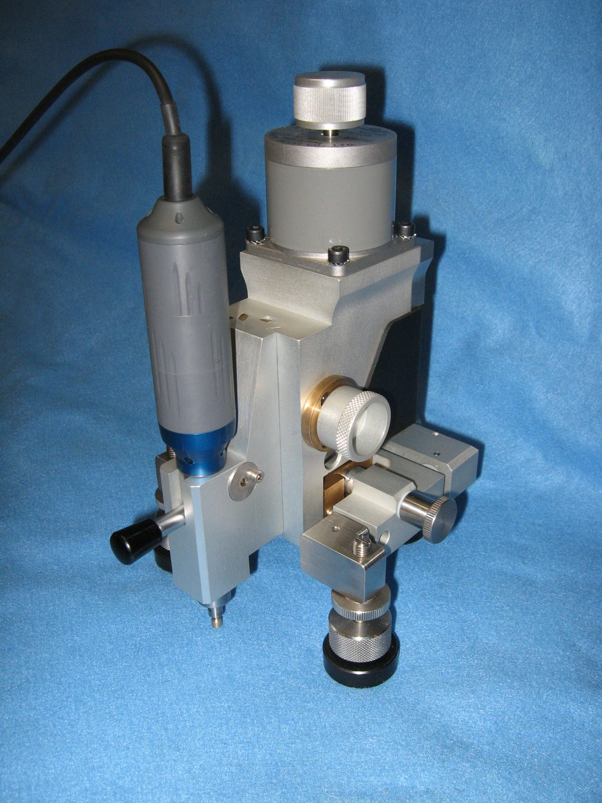
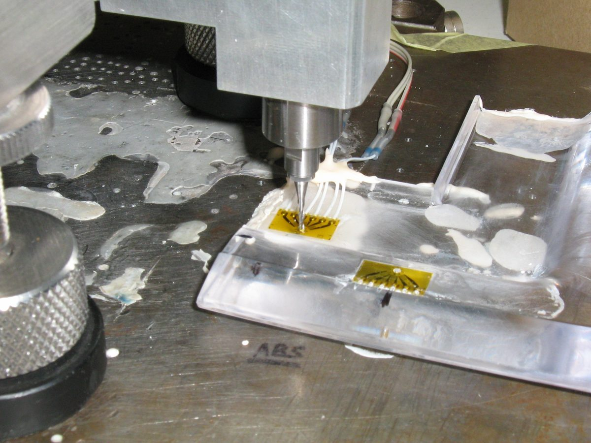
플라스틱 측정 사례는 화장품 용기 잔류응력 분석 사례와 플라스틱·사출물·복합재료 잔류응력 측정 페이지에서 확인하실 수 있습니다.
배관 내부 측정용 1-SINT/SLIDE5
1-SINT/SLIDE5는 MTS3000-RESTAN의 연장형 드릴링 슬라이드로, 고속 에어터빈을 이용해 배관 내부를 측정하는 구성입니다. 드릴링 헤드에 이더넷 현미경이 장착되어 가공된 구멍의 직경과 편심을 측정할 수 있습니다.
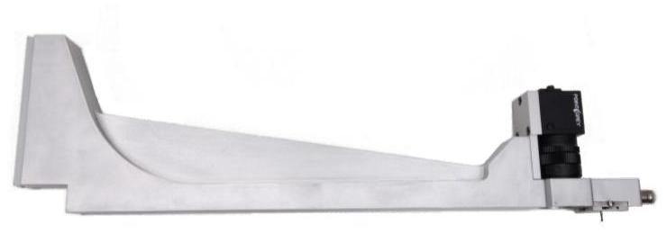
| 주요 사양 | 값 |
|---|---|
| 슬라이드 치수 (L×W×H) | 40 × 410 × 120mm |
| 무게 | 1.0kg |
| 최소 배관 내경 | 120mm |
| 최대 측정 거리 | 350mm |
| XY 이동 테이블 이동 범위 | 50.0 ~ 12.5mm (제조사 사양표 기준) |
| 이더넷 카메라 해상도 | 1600 × 1200 pixel |
| 소프트웨어 운영체제 | Windows 7 / 8 / 10 |
구성품
※ 기본 구성은 제조사 자료 기준이며 실제 공급 구성은 사양에 따라 달라질 수 있습니다.
적용 분야
MTS3000은 실험실과 현장 모두에서 크기에 상관없이 시편을 측정할 수 있어 아래와 같은 분야에서 활용됩니다.
| 분야 | 측정 대상 |
|---|---|
| 자동차 | 양산 부품, 레이싱 부품 (실린더, 피스톤 등) |
| 항공우주 | 기체·우주 구조물, 압력 용기 |
| 생산 관리 | 표면 처리·열처리 품질 관리, 대형 부품 |
| 석유·가스 | 압축기·터빈 부품 |
| 에너지 | 증기, 풍력, 원자력 발전 설비, 대형 배관 |
| 철도 | 차륜, 레일 시편 |
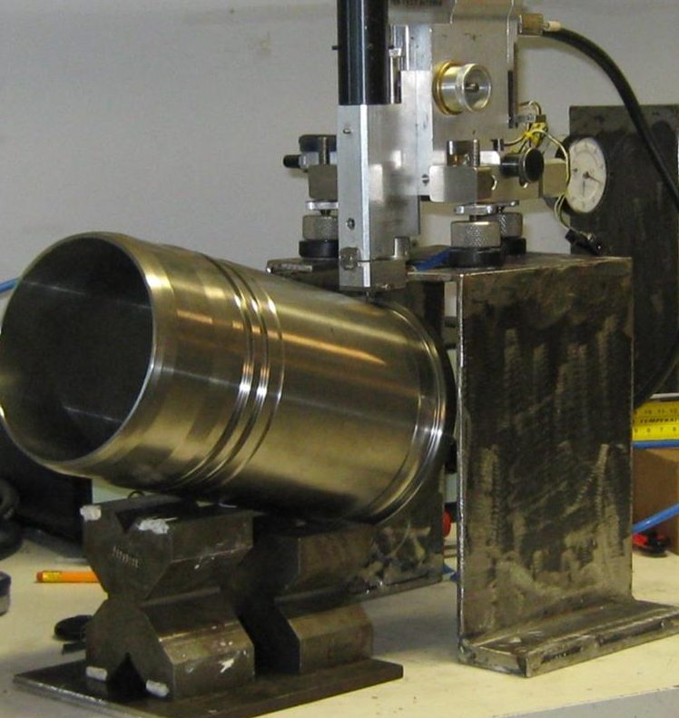
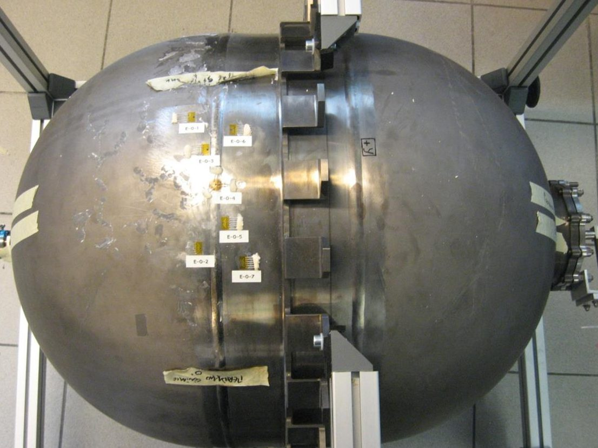
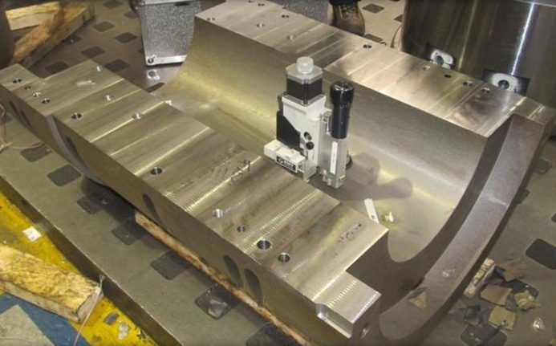
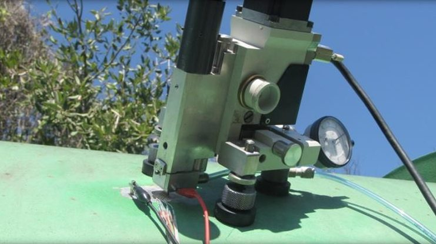
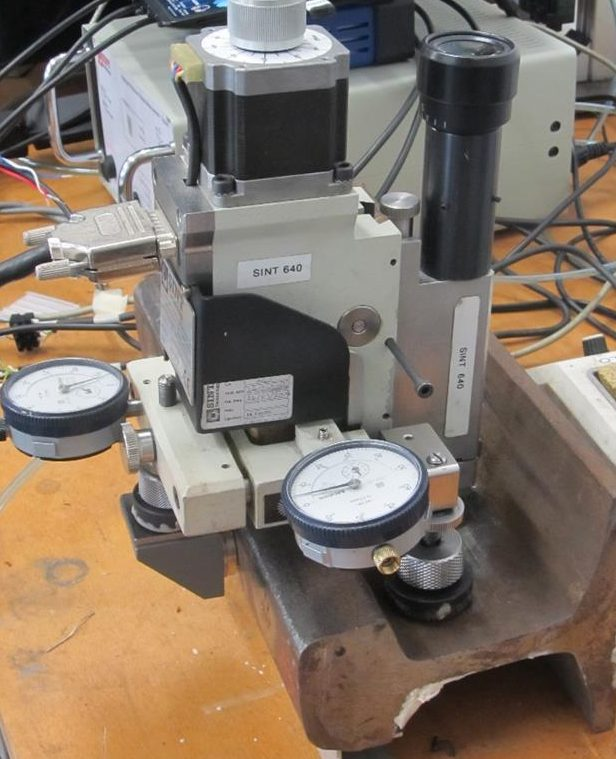
씨앤디테크 측정 지원
씨앤디테크는 MTS3000 시스템으로 금속, 용접부, 강관, 플라스틱 성형품의 잔류응력을 실험실과 현장에서 측정하며, 측정 위치 선정부터 로제트 부착, 홀드릴링 가공, 해석까지 지원합니다.
관련 기술 자료 더 보기:
자주 묻는 질문 (FAQ)
MTS3000 홀드릴링 잔류응력 측정 시스템 관련 질문
잔류응력 측정 문의
시편 소재, 형상, 측정 위치를 알려주시면 측정 방법과 일정을 안내해 드립니다. 현장 출장 측정도 지원합니다.